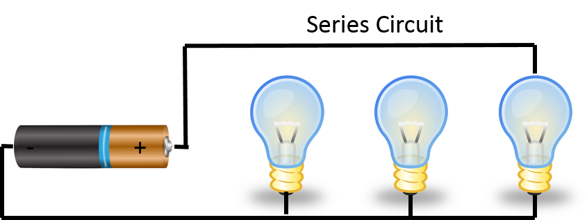

What You Should Know - Squishy Circuits: Series and Parallel Circuits
 Series Circuit
Series Circuit
A series circuit is a circuit that is closed but contains more than one resistor (more than one light bulb, motor, buzzer). When electricity flows through a series circuit the current only travels on one path. If there is a break in the circuit it stops the whole circuit from working. Series circuits also affect the brightness of the bulb, the more resistors you add (LED bulbs) the farther the current has to travel and the LED bulbs become dimmer.

Parallel Circuit
A parallel circuit is a circuit that is closed and like a series circuit it also contains more than one resistor (more than one light bulb, motor, buzzer). However, when electricity flows through a parallel circuit the current goes through every component in the circuit and carries the same amount of current to all of the resistors. Parallel circuits do not affect the brightness and an added benefit of parallel circuits is that if one resistor breaks, the others will continue to work because the current has multiple paths it can travel.
Circuit Drawings
Electricians have developed their own language to communicate about their work. Electricians draw pictures of electrical systems with very specific symbols called circuit diagrams. Circuit diagrams help people build and understand how an electrical system was set up. The wires, switches, or batteries may not be true to size but it helps anyone who will be working with the circuit to understand how it was built.
For example, if you were an electrician you could draw the circuit you completed in the Liftoff Challenge: Basic Circuits which included the Squishy Circuits battery and an LED connected by conductive dough. Your circuit diagram would look something like this: